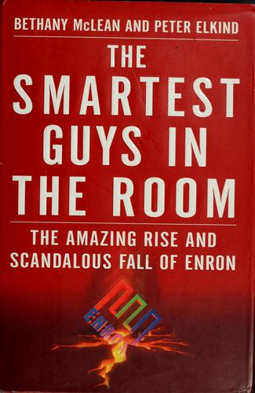

Library › Money & Finance
The Smartest Guys in the Room: The Amazing Rise and Scandalous Fall of Enron — Summary & Key Lessons

Fortune's most innovative company for six years running. Zero working for it, in the end. The definitive Enron account.
📖 OPEN THE FULL INTERACTIVE BREAKDOWN →🌐 Read it in Hindi, Hinglish, Gujarati, Tamil & 22 more languages — free, with audio.
💡 The Big Idea
McLean's famous question ('How exactly does Enron make its money?') anchors the definitive account: Jeff Skilling's mark-to-market accounting booked projected profits from decade-long contracts on day one; Andy Fastow's special purpose entities (LJM, Raptor) moved debt and losses off balance sheet while booking 'gains'; Ken Lay supplied statesman cover; a culture of rank-and-yank, deal-god arrogance and contempt for regulators did the rest. The collapse (December 2001), Andersen's shredding, employee 401(k)s locked in Enron stock, the criminal convictions (Skilling, Fastow; Lay's death before sentencing) and the Sarbanes-Oxley aftermath complete the arc. The book's genius is showing how NORMAL each step felt internally: every innovation was 'smart', every red flag was 'they don't get it', until the math arrived.
🧠 The 8 Key Lessons
Lesson 1: When You Can't Explain the Profits, Price the Fraud
Mark-to-Market Magic
Skilling's mark-to-market accounting let Enron book the ENTIRE projected profit of a 20-year contract in year one, making losses look like growth and requiring ever-bigger new deals to sustain the mirage. The investor lesson: companies whose profits you cannot trace to cash collection are selling projections, not performance. The operator lesson: the moment your accounting choice (not your operation) drives reported growth, you have converted your company into a story with a stock ticker.
📖 Example: Analysts who asked the simple question (where's the cash?) were dismissed as unsophisticated; McLean's March 2001 article asked it in print, months before the collapse, and the answer was: there was no cash. Read the full example →
⚡ Do this: Reconcile your reported profits to cash collected this quarter. If the gap is explained by 'modeling' or 'timing', cap that gap and write down why it's temporary, with a date.
Lesson 2: Complexity Is Where Losses Hide
Fastow's SPEs
The LJM and Raptor structures existed to move debt and losses into entities Enron nominally didn't own, using Enron stock as their capital. Each structure was 'legal' on advice, each added opacity, and together they constituted a company hiding its true economics from its own board. The principle: complexity per se is a red flag, because honest economics can usually be explained; complexity is the atmosphere losses need to breathe.
📖 Example: Fastow ran the SPEs while employed as CFO (a conflict the board waived), guaranteed them with Enron shares, and when the stock fell, the guarantees called the losses home, the entire scheme unwinding in weeks. Read the full example →
⚡ Do this: Draw your corporate structure on one page with arrows for money flows. If any entity or arrangement takes more than two minutes to explain to a smart outsider, simplify it or price the opacity as the risk it is.
Lesson 3: Culture Eats Controls When the Culture Is 'Smartest Guys'
Rank and Yank at the Top of the Market
Enron's culture (20-15-10% reviews, deal heroes, 'we're the smartest people in every room') made dissent career suicide and compliance a peasant trait. Skilling's open contempt ('you're an idiot' was his compliment taxonomy) filtered exactly the voices a company needs when its numbers rot. The lesson: arrogance is not a personality quirk at scale; it is a control-system failure, because it deletes the error-correction every large system needs.
📖 Example: The famous 'Why don't you guys shut up and make money' reply (to a fund manager's reasonable questions) became the culture in one sentence, and the analysts who kept asking were the only ones who saw it coming. Read the full example →
⚡ Do this: Measure your dissent health: when did someone junior last change a major decision by challenging the numbers? If you can't recall, your smartest-guys room is already sealed.
Lesson 4: Auditors Selling Consulting Audit Themselves
Arthur Andersen's Double Hat
Andersen earned multiples of its audit fee from Enron consulting, reviewed Enron's own SPE structures for approval, and (facing indictment) shredded documents. The structural lesson every founder and CFO should internalize: an advisor who sells you both the scheme and the blessing has priced neither. Separate who designs your aggressive positions from who blesses them, and let the two argue in writing.
📖 Example: The same Andersen partners approved structures they had helped conceive; when the collapse came, the firm's name (85+ years old) died with the shredder, proving reputation is the auditor's only real asset. Read the full example →
⚡ Do this: Audit your advisors' conflicts this month: who earns from implementing what they bless? Split those roles or document the conflict and the counter-check you use instead.
Lesson 5: Ponzi Math Needs a Growth Story to Keep the Lights On
The Ever-Bigger Deal
Because day-one accounting consumed future profits instantly, Enron needed exponentially bigger deals each quarter (broadband, water, weather derivatives, energy in India, anything) to feed the reported growth. The strategy became finding REASONS FOR ACCOUNTING, not reasons for customers. The warning sign for any company: when your finance team's deal-flow matters more than your sales team's, the books are eating the business.
📖 Example: Enron's most innovative decade (per Fortune) produced its most famous asset: the story; Dabhol, broadband, water (Azurix) each burned billions chasing the next curve the accounting needed. Read the full example →
⚡ Do this: Compare revenue growth to deal/announcement growth over two years. If announcements outpace cash revenue, stop and ask what business you are actually operating.
Lesson 6: Pension Systems Concentrate Risk on the People Least Able to Carry It
The Locked 401(k)
While executives sold hundreds of millions in stock, employee retirement accounts were locked in Enron shares during the black hole window (plan transitions), and 20,000 people watched retirements evaporate. The design lesson: concentrated employer-stock retirement is a structural trap; the human lesson: insiders' exits versus employees' lockups is the single image that turned Enron from finance scandal into moral scandal.
📖 Example: The 401(k) lockout (administrative, timed with the collapse) is remembered as the scandal's cruelest machine detail, converting paper losses into lost retirements. Read the full example →
⚡ Do this: If your company offers stock to employees, cap concentration (match in cash, or allow scheduled selling), and never schedule plan transitions during reporting windows.
Lesson 7: The Board Is Not a Backdrop
Waived Conflicts
Enron's board waived its own ethics code (for Fastow's SPE conflicts), approved accounting it didn't interrogate, and met a fraction of the required time. Directors were luminaries; luminosity is not oversight. The governance lesson: boards fail exactly when they defer to a charismatic CFO's complexity, and the fix is procedural (independent technical advisors, mandatory time, personal liability awareness), not motivational.
📖 Example: The famous waiver (permitting the CFO to profit from entities trading against his employer) passed with minimal debate, the single decision the post-mortems return to most. Read the full example →
⚡ Do this: If you sit on any board (or appoint one), adopt the Enron test: no waiver of conflicts without an independent expert's written opinion and a board member assigned to argue against.
Lesson 8: Regulation Is Written in the Ashes of the Last Fraud
Sarbanes-Oxley
Enron (with WorldCom) produced Sarbanes-Oxley: personal certifications, stronger audit oversight, internal control requirements, costs every honest company has carried since. The systemic lesson: fraud taxes everyone; each scandal's paperwork becomes the honest world's overhead. For founders, the strategic takeaway is to welcome audit-grade discipline early: it is cheaper than the version written in response to someone else's crime.
📖 Example: SOX's Section 302 certifications (executives personally signing accounts) exist because one company's executives claimed, under oath, that they had no idea where the money went. Read the full example →
⚡ Do this: Voluntarily adopt one SOX-grade practice now (executive sign-off on numbers, internal control documentation): it disciplines you today and prices you fairly in any future diligence.
✅ 5-Step Action Plan
- Reconcile reported profits to cash collected; cap and date any gap.
- Simplify any structure you can't explain in two minutes to a smart outsider.
- Track your dissent health: junior voices changing major decisions.
- Separate who designs aggressive positions from who blesses them.
- Cap employee stock concentration and never lock plans during reporting windows.
⚠️ When This Doesn't Work
McLean and Elkind reported with unprecedented access to documents and participants after the fall; Skilling contested characterizations at trial and after (his sentence was later commuted), and some civil matters settled without admission. The book is prosecution-shaped because the prosecutions succeeded; the human scale (employee losses, Andersen's 28,000 jobs) is accurately told. Read it as the canonical anatomy of a fraud that felt normal from the inside, which is precisely its warning.
💀 The Graveyard Proves It
⚡ Enron — The Smartest Guys in the Room. Burn: $74B shareholder value, 20,000 jobs. Read the full case study →
💬 Best Quotes from The Smartest Guys in the Room: The Amazing Rise and Scandalous Fall of Enron
- “How exactly does Enron make its money?”
- “The keys to the kingdom were handed to the guy with the most reckless vision and the least interest in reality.”
- “Everything would be fine if everyone would just believe.”
Interactive version: mark lessons as read, listen in your language, share quote cards.